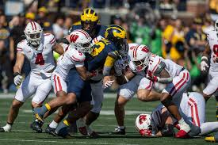

Football is a contact sport for many athletic people who like to play in contact sports.
American football has been around since the late 19th century but the first game ever recorded was on November 6, 1869 with princeton at the rutgers. American football became popular in 1950s after world war II.Then when College Football started on November 6, 1869. Then college football started to become popular in the 1920s. The first teams in the league were the Arizona Cardinals, the Chicago Bears, and The Cleveland Tigers, Arkon Pros, Canton Bulldogs, Rochester Jeffersons, Dayton Triangles, and more